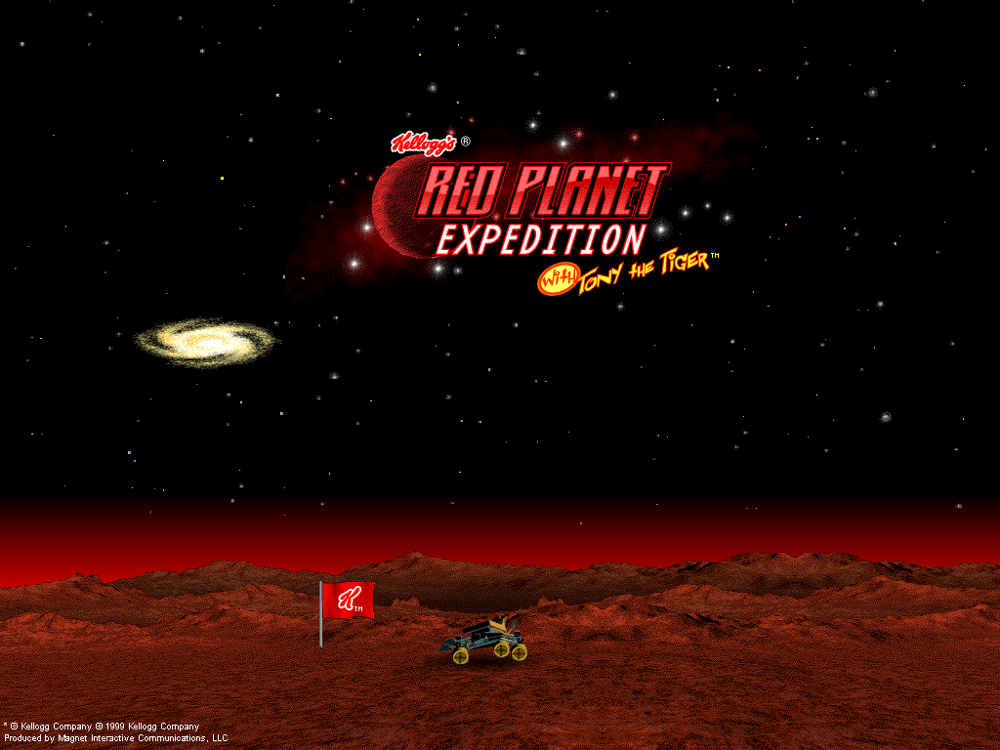
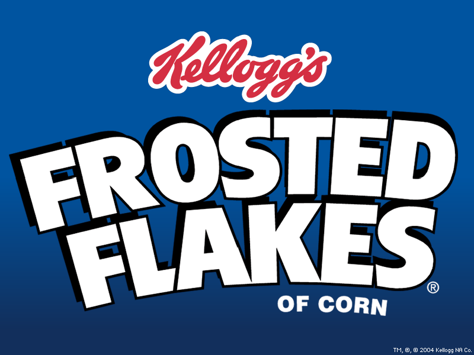

Frosted Flakes Screensavers

Red Planet Expedition

Note: This is a 16-bit program and requires special programs to run on 64-bit Windows, such as otvdm.
Note 2: This screensaver will not properly run on versions of Windows beyond Windows 2000.
DOWNLOAD
 .exe file zipped (1.46 MB)
.exe file zipped (1.46 MB)
Frosted Flakes

DOWNLOAD
.exe file zipped (1.14 MB)
Earn Your Stripes

DOWNLOAD
.sit file (Mac OS X) (4.24 MB)